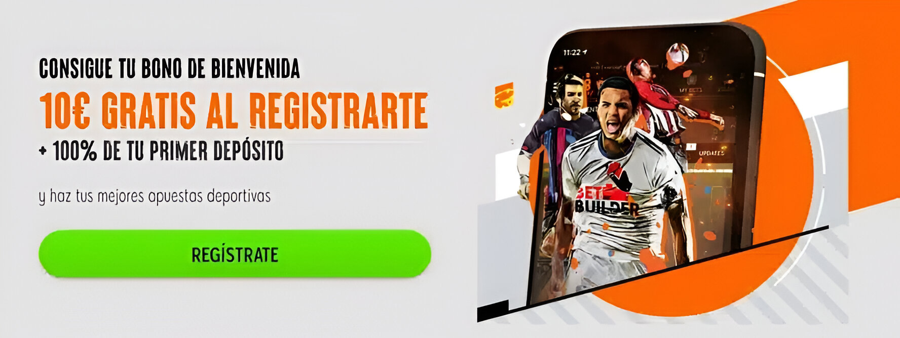

Apuestas LPB
Consejos para jugar con responsabilidad en el mundo de las apuestas deportivas
Pese a haber dinero de por medio, el mundo de las apuestas deportivas no deja de ser un juego. Como lo son el fútbol, tenis o baloncesto. Y eso es lo que tiene que tener claro cada jugador: uno debe jugar para divertirse y no con la idea de volverse millonario.
apostar no tiene que generar presiones ni ser considerado como un trabajo porque no lo es. El jugar con responsabilidad es parte de eso. Lo invertido uno tiene que considerarlo como un gasto en diversión, como cuando se va al cine o a comer con amigos.
Es fundamental poner límites de dinero como de tiempo y también apostar el monto que uno se permita perder. A nadie le gusta equivocarse en sus pronósticos pero hay que entender que es una posibilidad (y muy probable).
Se recomienda no jugar en momentos difíciles, como pueden ser depresión y ansiedad, ni tampoco obsesionarse con recuperar lo perdido. Cuando el juego ya no divierte, ha dejado de ser un juego.
Si el juego se volvió algo que no puedes manejar, es importante reconocer que se está ante un problema y que hay que acudir a un profesional.